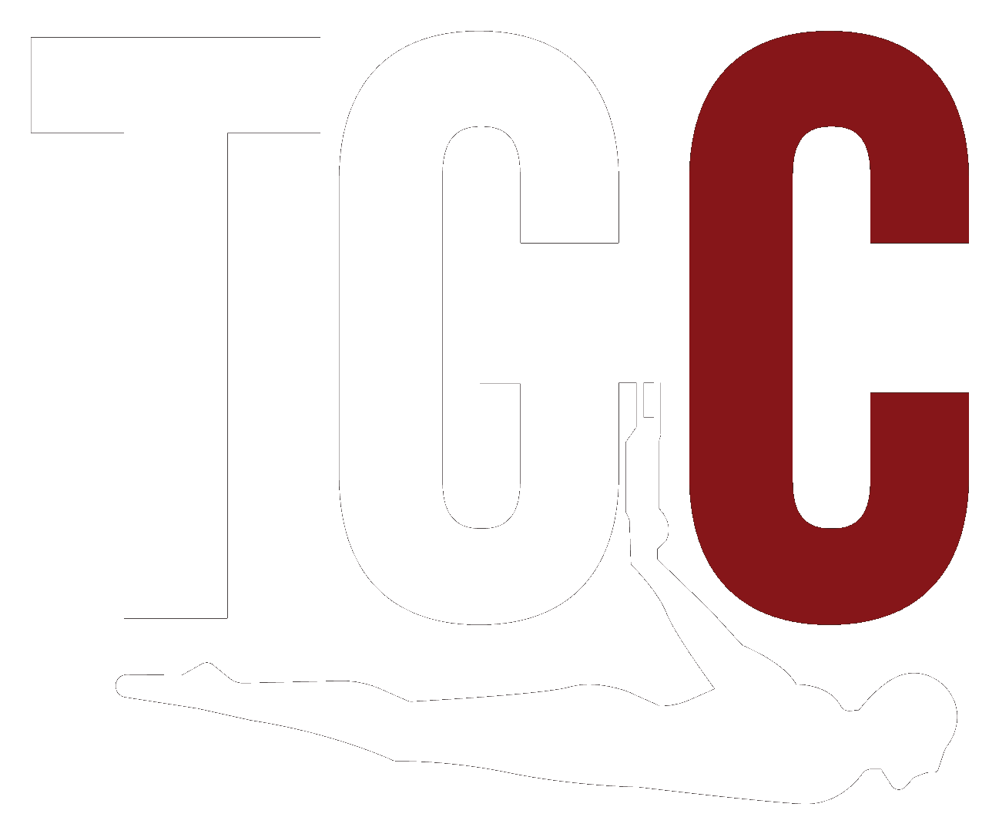
Guida del seminario

Guida del seminario
Guida del seminario
The Gymnastics Course
Manuale del partecipante

Edizione 2026
© 2026 BirdBox Coaching Limited. Tutti i diritti riservati.
Nessuna parte di questo manuale può essere copiata o condivisa senza autorizzazione scritta.
BirdBox Coaching Limited · 19 Baggot Street Lower, Dublin 2, D02 X658, Ireland
birdboxcoaching.com
Capitolo 1
Il Gymnastics Course è un seminario di sviluppo del coaching professionale. Guidato e sviluppato da un team di esperti allenatori provenienti da tutto il mondo, mirato a creare ed estrapolare il potenziale di trainers, coach, proprietari di palestre e atleti. Speriamo di svolgere un ruolo nella tua capacità di allenarti meglio e crescere verso i tuoi obiettivi di fitness. Il nostro obiettivo è utilizzare le informazioni e la metodologia della ginnastica e del movimento del corpo per aumentare le tue abilità nel tuo allenamento e nel coaching come abbiamo fatto per oltre un decennio.
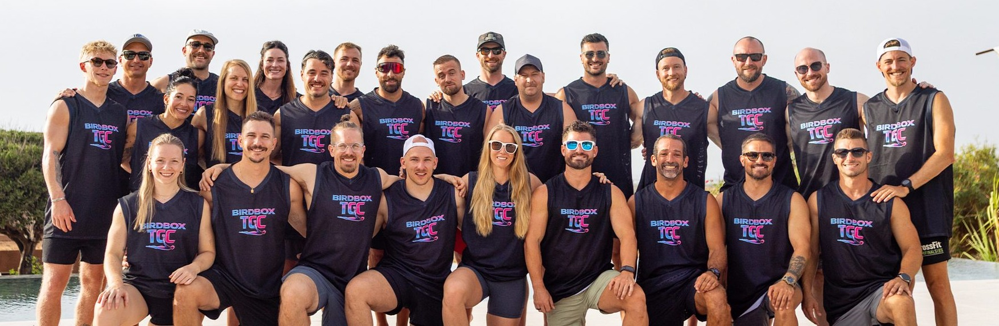
Questo manuale è un documento di supporto per le cose che scoprirai partecipando al nostro seminario dal vivo. Questo documento di supporto è stato progettato per aiutare a suggerire, ricordare e facilitare l’apprendimento. Permettendoti di emergere nell’ambiente di apprendimento e diventare uno studente attivo quando frequenti il nostro corso. Si prega di notare che questo manuale non cattura ogni singolo elemento discusso nel nostro corso.
Sperando che tu voglia esplorare un’opportunità di apprendimento più profonda con il Gymnastics Course, migliorando l’apprendimento del tuo seminario dal vivo. In tal caso, puoi anche imparare in modo interattivo online con il nostro corso online di autoapprendimento. Offriamo uno sconto significativo a tutti i partecipanti ai seminari dal vivo, contribuendo a costruire un’esperienza di apprendimento profonda e completa. Il seguente manuale conterrà immagini e spiegazioni che seguono i nostri punti critici per il seminario The Gymnastics Course. Ci saranno spazi assegnati attraverso questo manuale per aggiungere le tue note mentre svolgi questo corso. Con l’obiettivo di aiutarti a conservare attivamente le informazioni nel miglior modo possibile.
Capitolo 2

Capitolo 3
Un Atleta – Un atleta è qualcuno con la capacità d’élite di competere e vincere contro gli altri. Un marcatore relativo per un atleta sarebbe competere al massimo livello del proprio sport o prendere una posizione tra i primi 5 in una competizione nazionale o internazionale.
Analisi delle necessità – L’analisi dei bisogni è un processo formale e sistematico di identificazione e valutazione dell’allenamento che dovrebbe essere fatto per aiutare a sviluppare un atleta verso i requisiti del suo sport, di vita o per evitare un infortunio.
Regole – Una regola si basa su principi; sono standard suggeriti per aiutare a correggere e sviluppare in sicurezza un atleta; una regola può essere infranta ed è governata da te stesso o da un allenatore.
Leggi – Una legge è una regola molto più rigida che deve essere rispettata. Infrangere la legge non è un’opzione in quanto ciò è limitato dalla scienza. Ad esempio, le leggi gravitazionali di Newton non possono essere modificate o piegate.
Virtuosismo – Il virtuosismo, però, è tutta un’altra cosa. In ginnastica il virtuosismo è definito come “eseguire il comune in modo non comune”. (Greg Glassman, 2005)
Maestria – La maestria è definita come “il miglioramento dell’abilità di un atleta nell’utilizzare efficacemente il proprio potenziale motorio” (BirdBox Coaching, 2020)
Tessuto attivo – Il tessuto attivo è la capacità di contrarre i muscoli per aiutare a mantenere le posizioni nel loro insieme, rimanendo un’unica unità solida.
Hollow – Una posizione usata per creare stabilità, caratterizzata da una forte contrazione della linea mediana con tessuto attivo dalle dita dei piedi alle dita delle mani. Ricorda che la posizione hollow è una linea retta con retroversione del bacino.
Strict – Movimento assente di kip. L’atleta fa affidamento sul controllo muscolare e sulla forza per completare il movimento.
Kip – Un cambio di direzione aggressivo a velocità che porta a un cambiamento di piano o posizione per ottenere uno schema di movimento.
Forma – Il modo o il metodo per eseguire correttamente un movimento mentre si cerca la perfezione.
Attrezzo Statico – Stabile e non si muove (pavimento e sbarre).
Attrezzo Dinamico – Instabile e si muove (anelli).
Mobilità – Movimento attorno a un’articolazione.
Flessibilità Attiva – Contrazione dei muscoli opposti per allungare o mantenere una posizione.
Flessibilità Passiva – Allungamento di un muscolo che non richiede la contrazione dei muscoli opposti.
ROM – Range di movimento.
EROM – Range di movimento esteso.
Spotting – Fornire assistenza a un atleta se necessario come parte di una progressione o per prevenire lesioni.
Tensione – La tensione, come parola, può essere definita come "lo stato di essere teso" e l’opposto sarebbe "lasso" o "sciolto" (Fowler & Crystal, 2010).

Capitolo 4
Noi di The Gymnastics Course evidenziamo che CrossFit è un programma di allenamento per la forza e il condizionamento. Pertanto, quando lavoriamo con un atleta o un cliente, dovremmo fare un’analisi dei bisogni. Comprendere le esigenze e i bisogni di un atleta, le sue esigenze sportive o di vita e progettare il suo programma di allenamento in base alle discrepanze tra i due.
La ginnastica è un movimento puramente a corpo libero. Di conseguenza, come muovi il tuo corpo attraverso lo spazio, teorizziamo che dobbiamo concentrarci sulla ginnastica prima del condizionamento metabolico poiché questa è la nostra base per il movimento, la biomeccanica. Se un individuo dovesse avere una scarsa biomeccanica (movimento umano), si può suggerire che la capacità di raggiungere il condizionamento metabolico sarebbe nulla o a rischio di lesioni.
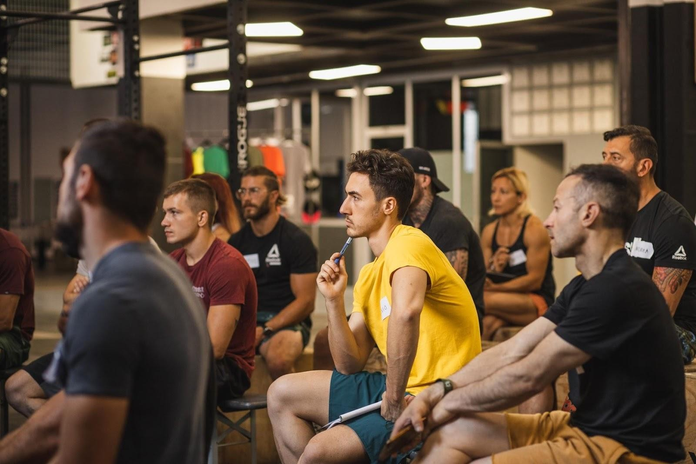
Capitolo 5
Regola numero 1: Statico prima di dinamico
Regola numero 2: Strict prima di kipping
La forza è necessaria per la forma corretta e la forma corretta è necessaria per dimostrare il controllo del corpo. In quanto tale, la ginnastica pone una chiara enfasi sulla forza nei movimenti a corpo libero. Più di ogni altra cosa, la forma strict stabilisce la maestria in un movimento e, per questo motivo, promuoviamo il movimento strict prima di applicare il kipping. La forza acquisita dalla padronanza dei movimenti strict vale lo sforzo e la possibilità di lesioni si riduce sostanzialmente quando si praticano prima i movimenti strict. Piccole mosse porteranno grandi ricompense. Non affrettare questi movimenti. Imparali e guadagnateli!
Per presentare la maestria in tutti i nostri movimenti, dobbiamo avere una consapevolezza e un controllo del corpo virtuosi. Per ottenere questa consapevolezza e controllo del corpo, dobbiamo eseguire tutti i movimenti con la forma corretta. Per ottenere la forma corretta, dobbiamo avere la forza necessaria attraverso l’intera gamma di movimento, dall’inizio alla fine. Qualsiasi mancanza di forza attraverso un raggio di movimento comprometterà una posizione che fa sì che le forze vengano inviate nelle direzioni sbagliate. In alternativa, non si verificherà alcuna azione poiché la forza è nulla.
Quando miriamo a sviluppare il movimento di un atleta, spieghiamo un processo che consente agli allenatori di trovare una maggiore efficacia. Le opzioni come coach per i cambiamenti nello sviluppo del movimento sono segnali di coaching, vincoli di coaching e interventi di coaching.
“La forza è un imperativo per la forma corretta,
e la forma corretta è indispensabile per la consapevolezza e il controllo del corpo.”

Regola numero 3:
Costruisci una base isometrica.
Regola numero 4:
Utilizzare il carico eccentrico come strumento di sviluppo della forza e della posizione.
Le contrazioni isometriche sono dove il muscolo è sotto carico o tensione rimanendo della stessa lunghezza. L’allenamento isometrico è essenziale per la stabilizzazione articolare e lo sviluppo del tessuto connettivo. Il carico eccentrico è dove un muscolo è sotto carico o tensione, ma il muscolo si sta allungando. L’eccentrica porterà a molti noti benefici, in particolare cambiamenti nell’architettura muscolare che portano allo sviluppo della forza. Le contrazioni concentriche sono dove un muscolo è sotto carico o tensione, ma il muscolo si accorcia allo stesso tempo. Eseguiamo sempre contrazioni concentriche nell’allenamento. Pertanto, dobbiamo considerare come sviluppiamo la forza nei nostri membri e i rischi di ogni strumento di contrazione: questi rischi ti vengono delineati durante la nostra lezione di programmazione del corso.
Capitolo 6
Consigli di coaching sono indirizzati all’atleta affinché effettui un cambio di posizione utilizzando la comunicazione verbale.
Vincoli di coaching sono compiti o esercizi che non interferiscono con la lunghezza o la forza di un muscolo, ma aiutano a far lavorare duramente un individuo verso posizioni migliori all’interno di un movimento scelto.
Interventi di Coaching vengono utilizzati quando consigli e vincoli diventano inefficaci. Portando al cambiamento di lunghezza o forza del tessuto muscolare, con l’obiettivo di migliorare i movimenti.
Durante il seminario dal vivo, forniamo molteplici aspetti di consigli, interventi e vincoli di coaching. Di seguito è riportato un esempio di come decidere in modo efficace quando utilizzare un consiglio, un vincolo o un intervento.
Capitolo 7
Come atleta e/o allenatore, è fondamentale comprendere le posizioni nei movimenti. Qui presenteremo una serie di immagini che mostrano posizioni chiave per lo sviluppo. Comprendendo e praticando queste posizioni chiave, puoi sviluppare le tue capacità, migliorare le tue prestazioni e ridurre il rischio di lesioni.
Ti invitiamo ad aggiungere in modo proattivo note a ciascuna immagine se le esaminiamo nel seminario e incorporiamo queste posizioni nella tua routine di allenamento.
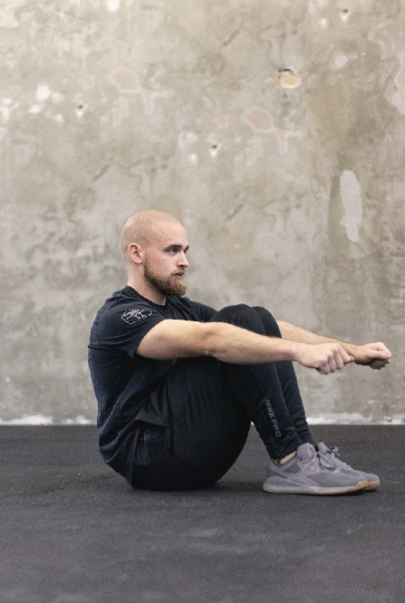


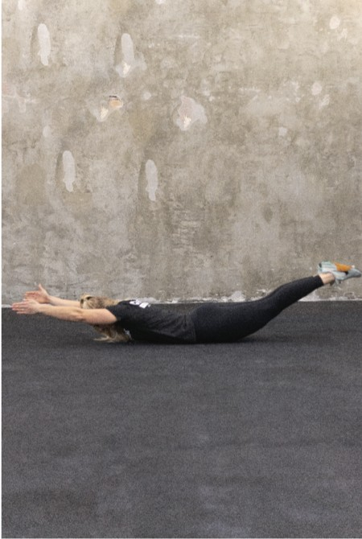


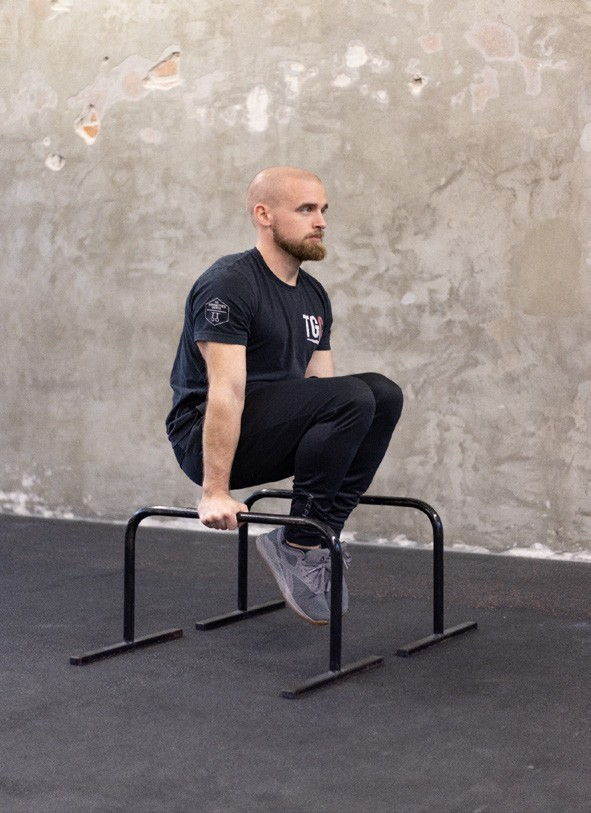


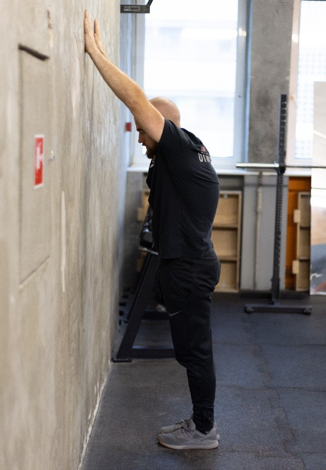


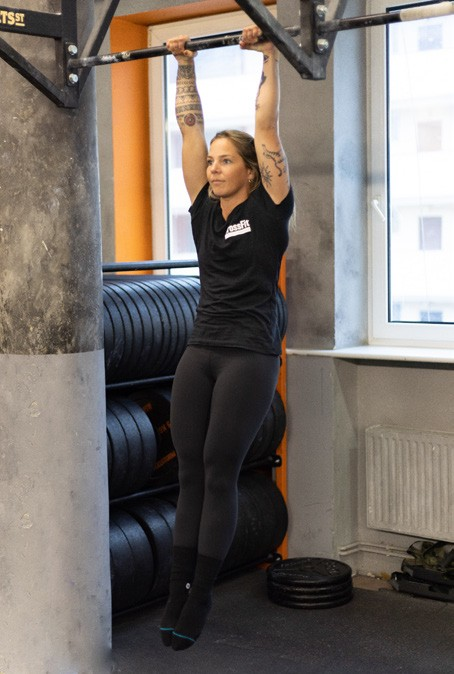


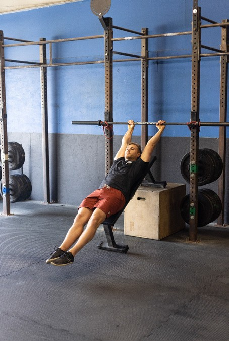


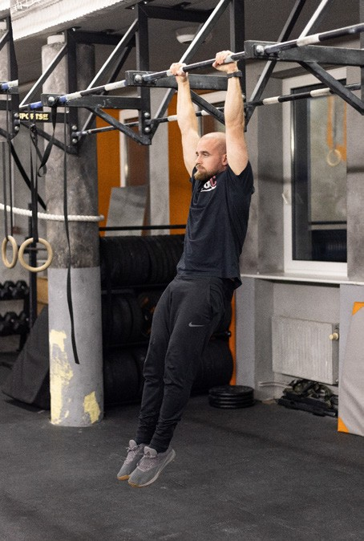


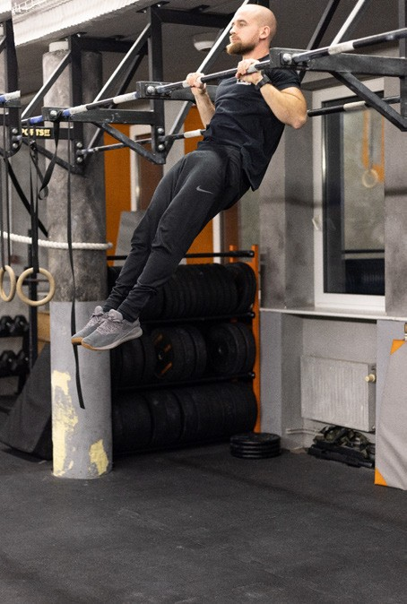


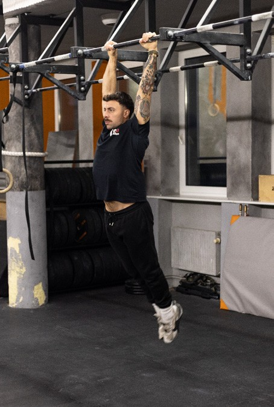


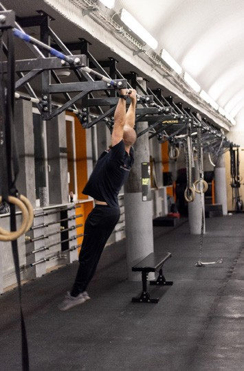


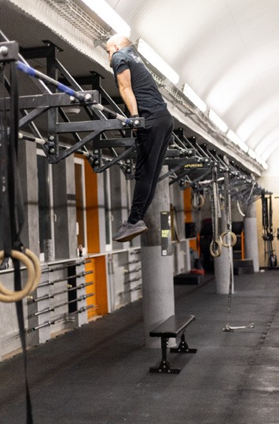


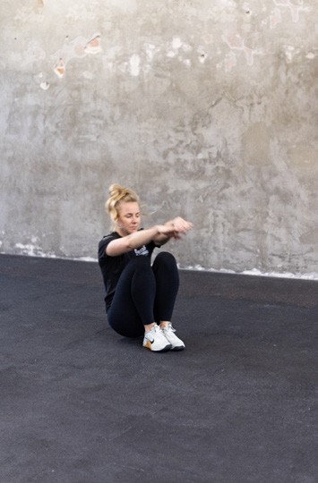
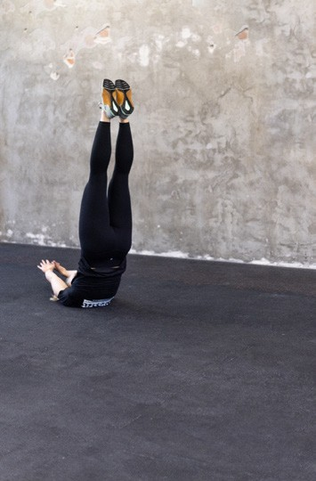


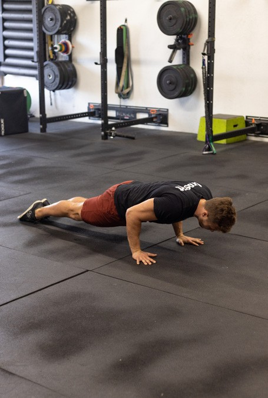


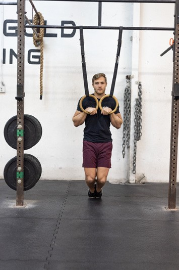


Capitolo 8
Durante la lezione di programmazione andiamo molto più in profondità. Qui vorremmo condividere alcuni elementi chiave di questa lezione. Copriamo molte informazioni importanti, ma qui stiamo evidenziando alcuni aspetti chiave.
La progressione lineare è un metodo di allenamento che prevede l’aumento graduale della difficoltà o del volume di un esercizio nel tempo per stimolare il progresso e l’adattamento. Questo metodo è comunemente usato nell’allenamento della forza per aiutare gli atleti a sviluppare la forza e la resistenza necessarie per eseguire movimenti o sollevamenti più avanzati. Utilizzando la progressione lineare nell’allenamento, gli atleti possono aumentare gradualmente la loro forza e resistenza in modo sicuro ed efficace. È importante notare che la progressione lineare dovrebbe essere utilizzata in combinazione con una forma e una tecnica adeguate per evitare lesioni e garantire risultati ottimali. Ci piace usare questo metodo di progressione lineare nei nostri programmi di ginnastica.
Molte persone usano le percentuali nel loro sollevamento pesi, ma non molte persone usano le percentuali nella loro ginnastica. Nella ginnastica, l’intensità è la % di 1RM o TUT (tempo sotto tensione). Il volume totale è la quantità totale di ripetizioni o il tempo totale sotto tensione.
Di seguito troverai due esempi di progressione lineare per lo sviluppo del pull-up strict. Come puoi vedere, carichiamo sempre in anticipo il primo set della sessione in modo da poter creare un sovraccarico progressivo. Ci piace iniziare questa progressione con il 40%. Il primo esempio di seguito si basa su un set massimo di 10 pull-up strict e virtuosi.
Esempio di progressione lineare con % di 1RM:
| Settimana | Sessione 1 | Sessione 2 | Sessione 3 |
|---|---|---|---|
| 1. | 4-4-4 | 5-4-4 | 5-5-4 |
| 2. | 5-5-5 | 6-5-5 | 6-6-5 |
| 3. | 6-6-6 | 7-6-6 | 7-7-6 |
| 4. | 7-7-7 | 8-7-7 | 8-8-7 |
| 5. | 8-8-8 | 9-8-8 | 9-9-8 |
| 6. | Retest | ||
*Ricomincia questo ciclo con il tuo nuovo numero del tuo set massimo.
Se non sei in grado di eseguire un pull-up strict, dobbiamo sviluppare la forza e lo faremo lavorando a tempo sotto tensione. In questo caso, inizia con l’esempio di progressione di seguito. Il primo numero è per una presa del mento sopra la barra e il secondo numero è per l’eccentrico. Salta in posizione per iniziare il tuo set. Se non sei in grado di controllare e mantenere queste posizioni con tutto il tuo peso corporeo, scalalo usando il toe spotting.
Esempio di progressione lineare con il TUT:
| Settimana | Sessione 1 | Sessione 2 | Sessione 3 |
|---|---|---|---|
| 1. | 3/3 - 3/3 - 3/3 | 4/4 - 3/3 - 3/3 | 4/4 - 4/4 - 3/3 |
| 2. | 4/4 - 4/4 - 4/4 | 5/5 - 4/4 - 4/4 | 5/5 - 5/5 - 4/4 |
| 3. | 5/5 - 5/5 - 5/5 | 6/6 - 5/5 - 5/5 | 6/6 - 6/6 - 5/5 |
| Retest | Ritesta il tuo strict pull-up. Se sei in grado di farne uno, continua con la sessione 1, settimana 4. Se non sei in grado di farne uno, continua con il caricamento frontale dei secondi sul tuo set. Se hai usato il toe spotting nelle prime tre settimane, ricomincia dalla settimana 1 e usa tutto il tuo peso corporeo. | ||
| 4. | 1-1-1 | 2-1-1 | 2-2-1 |
| 5. | 2-2-2 | 3-2-2 | 3-3-2 |
| 6. | 3-3-3 | 4-3-3 | 4-4-3 |
*Se sei riuscito a completare l’intera progressione, ora puoi ricominciare con l’esempio %
Puoi applicare questa progressione a ogni movimento di ginnastica. Questo è un approccio molto semplice e facile da applicare nella tua programmazione. Forse anche per la maggior parte della tua base di membri l’approccio migliore.
Se vuoi giocare con volume, intensità e frequenza per la programmazione individuale e vuoi capirlo più a fondo, di seguito puoi trovare un altro esempio di progressione lineare con più variabilità di volume, intensità e frequenza.
*L’esempio seguente si basa su un set massimo di 10 pull-up strict e virtuosi.
| Settimana | Intensità | Frequenza | Volume |
|---|---|---|---|
| 1. | 3 serie al 40% 4-4-4 | 2 sessioni a settimana | 24 ripetizioni |
| 2. | 3 serie al 40% 4-4-4 | 2 sessioni a settimana | 24 ripetizioni |
| 3. | 3 serie al 50% 5-5-5 | 2 sessioni a settimana | 30 ripetizioni |
| 4. | 3 serie al 50% 5-5-5 | 2 sessioni a settimana | 30 ripetizioni |
| 5. | 4 serie al 40% 4-4-4-4 | 2 sessioni a settimana | 32 ripetizioni |
| 6. | 4 serie al 40% 4-4-4-4 | 2 sessioni a settimana | 32 ripetizioni |
| 7. | 3 serie al 40% 4-4-4 | 3 sessioni a settimana | 36 ripetizioni |
| 8. | 3 serie al 40% 4-4-4 | 3 sessioni a settimana | 36 ripetizioni |
Come puoi vedere l’intensità, il volume e la frequenza sono gli stessi per ogni due settimane. Dopo le prime due settimane abbiamo aumentato l’intensità. Dopo la terza e la quarta settimana abbiamo ridotto l’intensità per la quinta e la sesta settimana, ma abbiamo aumentato il volume. Nella settima e nell’ottava settimana abbiamo aumentato la frequenza. Giocando con il volume, l’intensità e la frequenza puoi vedere come stanno salendo quei numeri. Puoi applicarlo anche alle contrazioni isometriche o al carico eccentrico.
Nell’esempio puoi vedere che il volume nella ginnastica è basso. Nel sollevamento pesi non otterrai sovraccarico facendolo a questo volume. Nella ginnastica otteniamo un sovraccarico negli adattamenti in base al tempo sotto tensione e al tempo di lavoro, non in base al volume. Di tanto in tanto si può usare un volume più alto, ma è il tempo sotto tensione e il tempo che dobbiamo davvero usare.
Ciò significa che se eseguiamo la nostra serie di 4-4-4 pull-up strict rimarremo fermi in hollow per 5 secondi, faremo un concentrico di 3 secondi, terremo il mento sopra la barra per 3 secondi, faremo un eccentrico di 5 secondi verso il basso per tutte e 4 le ripetizioni. Vogliamo allenare posizioni e perfezione, non volume e intensità.